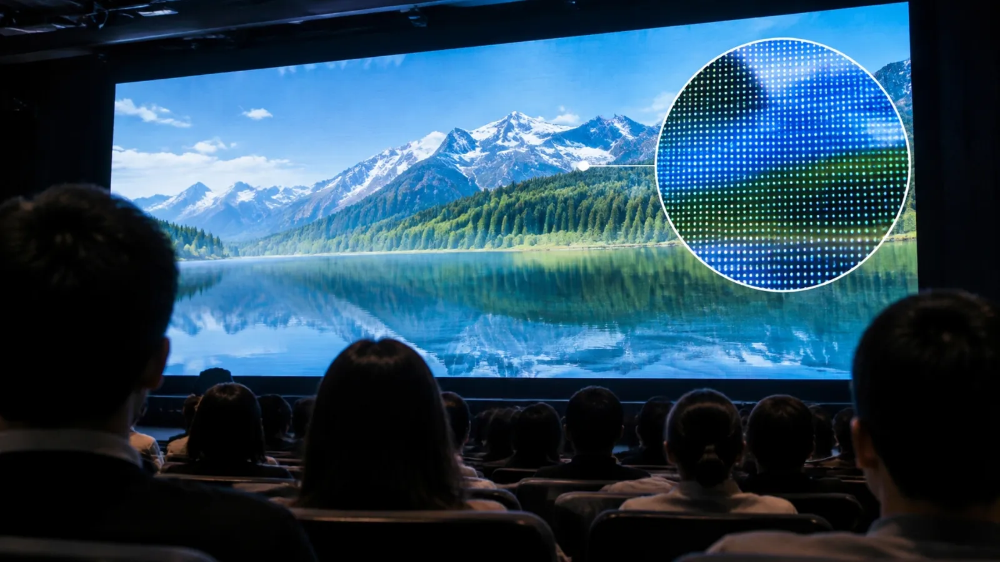

光る点の間隔
LEDの粒(ピクセル)の中心から、隣の粒の中心までの距離。小さいほど細かい画面です。
LOTUS VISUAL JOURNAL / DISPLAY
LED画面を選ぶときに出てくる「2.6mm」「3.9mm」という数字。
これは画面の細かさで、見る距離と組み合わせて考えます。

LEDの粒(ピクセル)の中心から、隣の粒の中心までの距離。小さいほど細かい画面です。
間隔より十分離れないと、映像ではなく点の集まりに見えます。
細かい画面でも、文字が小さければ後ろの席からは読めません。
数字は例で、実際の見え方は会場で確かめます。
01 / A RULE OF THUMB
メーカーの解説では、「最低適正視認距離 = ピクセルピッチ × 1.16」という目安が紹介されています。2.6mm のピッチなら約 3m、3.9mm なら約 4.5m より遠くから見ると、粒が気にならずに映像として見える、という計算です。ざっくり覚えるなら「ピッチの数字(mm)と同じくらいの距離(m)は離れる」で十分です。
これは「これより近いと見えない」という意味ではなく、「これより近いと点の集まりに見え始める」という目安です。最前列の人がどこに座るかが、ピッチを選ぶ最初の手がかりになります。
02 / THE BACK ROW
ピッチが細かくても、資料の文字が小さければ後ろの席では読めません。後ろの席で読める文字の大きさは、画面の高さと、映す資料の文字の行数で決まります。画面を大きくするか、1画面に映す文字を減らすか、どちらでも解決できます。
見積ページの構成シミュレーターでは、画面の幅・高さと人の大きさを並べて、客席からの見え方を図で確かめられます。文字の大きさの感覚をつかむための検討用の図で、施工図ではありません。
大きさを試してみる ↗03 / NOT ONLY PITCH
屋内の会議室と、昼の屋外では、必要な明るさが違います。横から見る席が多い会場では、斜めから見たときの色の変わり方も見え方に関わります。画面を高い位置に吊るか、床に立てるかでも、前の席の見上げる角度が変わります。
ピッチは最初に見る数字ですが、「誰が、どこから、何を読むか」を決めると、大きさ・明るさ・設置の仕方が順に決まっていきます。
THREE QUESTIONS
席の配置図があれば、そこから一緒に数字を出せます。まだラフの段階でも大丈夫です。
画面の大きさを相談する ↗LED の種類を見る ↗本文の数値・定義は規格やメーカーの公表値をもとにしています。場面の描写は当サイトの提案例で、特定案件の実績紹介ではありません。